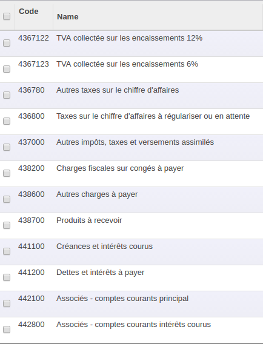

<section class="oe_container">
    <div class="oe_row oe_spaced">
        <div class="oe_span12">

            <h2 class="oe_slogan">Tunisia - Accounting 12.0</h2>
            <h3 class="oe_slogan">Plan comptable Tunisien en Odoo 12</h3>
            <!--<h3 class="oe_slogan">Testé et validé par des experts-comptables</h3>-->
        </div>
        <div class="oe_span6">
            <div class="oe_demo oe_picture oe_screenshot">
                    
            </div>
        </div>
        <div class="oe_span6">
            <p class="oe_mt32">This is the base module to manage Chart of Accounts and Taxes template for companies in Tunisia with odoo 12.0</p>

           
        </div>
    </div>
</section>


